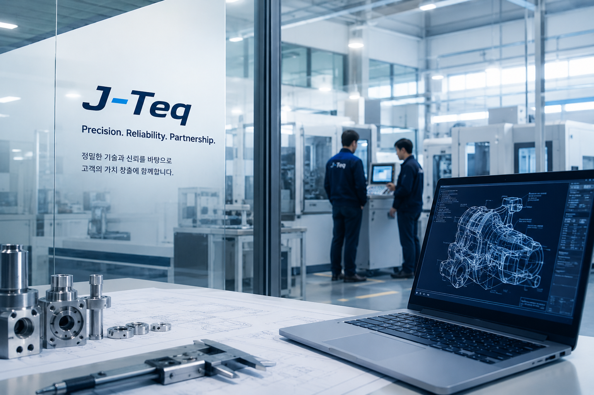

정밀 검사 및 산업 솔루션 전문기업

J-Teq는 정밀 검사, 산업용 마킹 시스템 및 공조·산업 부품 분야의 전문 엔지니어링 기업으로, 고객의 품질 향상과 생산성 혁신을 위한 최적의 솔루션을 제공합니다.
리크 테스트 시스템, 압력 측정 솔루션,
산업용 마킹 시스템 및 GMCC 컴프레서를 비롯한
산업용 부품 분야의 경험을 바탕으로,
자동차, 전기차 배터리, HVAC 및 전자부품 산업에
최적화된 기술을 제공합니다.
국내외 제조업 고객과의 다양한 프로젝트 경험을 바탕으로
기술 지원부터 시스템 구축, 유지보수까지
고객과 함께 성장하는
신뢰할 수 있는 파트너가 되겠습니다.
고정밀 리크 테스트 및
품질 검사 솔루션
고정밀 압력 센서 및
인디케이터 솔루션
레이저 마킹, 도트 마킹 및
잉크젯 마킹 시스템
컴프레서, 모터 및 밸브 등
각종 산업용 부품
엔진, 변속기 및 자동차 부품
기밀 검사 솔루션
배터리 셀, 모듈, 팩
기밀 검사 솔루션
컴프레서, 모터 및 밸브
적용 산업 분야
정밀 측정 및
레이저 마킹 솔루션
끊임없는 기술 혁신과 엔지니어링 역량
고객 만족을 위한 품질 중심 경영
고객과 함께 성장하는 신뢰의 파트너